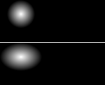
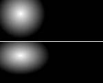
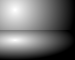
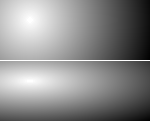
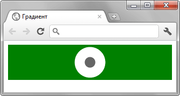
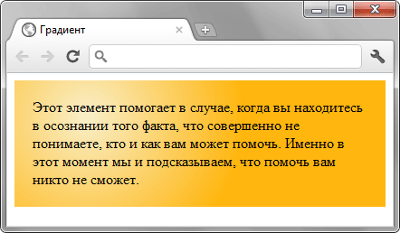

Функция radial-gradient()
Функция radial-gradient() добавляет радиальный градиент к фону элемента. Радиальные по своему принципу похожи на линейные градиенты, но один цвет переходит в другой не вдоль прямой линии, а словно круги по воде вокруг точки. На рис. 1 представлено для сравнения одновременно два разных градиента: радиальный (рис. 1а) и линейный (рис. 1б).
 |
 |
| а | б |
Рис. 1. Радиальный и линейный градиент
Радиальный градиент создаётся с помощью свойства background или background-image.
Синтаксис
background-image: radial-gradient([ circle || <радиус> ] [ at <позиция> ]? ,
| [ ellipse || [<радиус> | <проценты> ]{2}] [ at <позиция> ]? ,
| [ [ circle | ellipse ] || <размер> ] [ at <позиция> ]? ,
| at <позиция> ,
<цвет> [ , <цвет> ]*)Значения
- cicle
- Радиальный градиент круглой формы.
- ellipse
- Создаёт градиент эллиптической формы. Эта форма установлена по умолчанию.
- <радиус>
- Радиус градиента в доступных для CSS единицах. Одно значение указывает радиус круга, два значения — радиус эллипса по оси x и его же радиус по оси y. Если радиус явно не указан, градиент будет заполнять собой весь фон элемента.
- <позиция>
-
Задаёт начальную точку откуда исходит градиент. Позиция точки пишется аналогично значениям свойства background-position с помощью ключевых слов или доступных единиц измерения вроде пикселей или процентов; ниже приведены возможные сочетания.
- top left = left top = 0% 0% (в левом верхнем углу);
- top = top center = center top = 50% 0% (по центру вверху);
- right top = top right = 100% 0% (в правом верхнем углу);
- left = left center = center left = 0% 50% (по левому краю и по центру);
- center = center center = 50% 50% (по центру) — это значение по умолчанию;
- right = right center = center right = 100% 50% (по правому краю и по центру);
- bottom left = left bottom = 0% 100% (в левом нижнем углу);
- bottom = bottom center = center bottom = 50% 100% (по центру внизу);
- bottom right = right bottom = 100% 100% (в правом нижнем углу).
- <цвет>
- Представляет собой значение цвета (см. цвет), за которым идёт необязательная позиция цвета относительно оси градиента, она задаётся в процентах от 0% до 100% или в любых других подходящих для CSS единицах.
- <размер>
- Устанавливает размер градиента. В табл. 1 перечислены возможные значения размера с их описанием и результатом для белого и чёрного цвета. Код и вид дан для кругового и эллиптического градиента.
| Значение | Код | Описание | Вид |
|---|---|---|---|
| closest-side | background: radial-gradient(circle closest-side at 30px 20px, #fff, #000); background: radial-gradient(closest-side at 30px 20px, #fff, #000); |
Градиент совпадает с ближайшей к нему стороной блока (для круга) или одновременно совпадает с ближайшими горизонтальными и вертикальными сторонами (для эллипса). |  |
| closest-corner | background: radial-gradient(circle closest-corner at 30px 20px, #fff, #000); background: radial-gradient(closest-corner at 30px 20px, #fff, #000); |
Форма градиента вычисляется на основании информации о расстоянии до ближайшего угла блока. |  |
| farthest-side | background: radial-gradient(circle farthest-side at 30px 20px, #fff, #000); background: radial-gradient(farthest-side at 30px 20px, #fff, #000); |
Похож по своему действию на closest-side, но градиент распространяется до дальней стороны блока. |  |
| farthest-corner | background: radial-gradient(circle farthest-corner at 30px 20px, #fff, #000); background: radial-gradient(farthest-corner at 30px 20px, #fff, #000); |
Форма градиента вычисляется на основании информации о расстоянии до дальнего угла блока, |  |
Пример
<!DOCTYPE html>
<html>
<head>
<meta charset="utf-8">
<title>Градиент</title>
<style>
div {
background: radial-gradient(circle closest-side, #333 10px,
white 11px, white 30px, green 31px);
height: 70px;
}
</style>
</head>
<body>
<div></div>
</body>
</html>Результат данного примера показан ниже.

Резкие переходы между разными цветами
<!DOCTYPE html>
<html>
<head>
<meta charset="utf-8">
<title>Градиент</title>
<style>
div {
background: #ffb60f;
background: radial-gradient(circle at 80px 40px, #f9eec7, #ffb60f, #ffb60f);
padding: 20px;
}
</style>
</head>
<body>
<div>Этот элемент помогает в случае, когда вы находитесь в осознании того
факта, что совершенно не понимаете, кто и как вам может помочь. Именно
в этот момент мы и подсказываем, что помочь вам никто не сможет.
</div>
</body>
</html>Результат данного примера показан ниже.

Круговой градиент
Спецификация
| Спецификация | Статус |
|---|---|
| CSS Image Values and Replaced Content Module Level 3 | Возможная рекомендация |
Браузеры
| Internet Explorer | Chrome | Opera | Safari | Firefox | ||||
| 10 | 10 | 26 | 11.10 | 12.10 | 5.1 | 6.1 | 3.6 | 16 |
| Android | Firefox Mobile | Opera Mobile | Safari Mobile | ||
| 2.1 | 4.4 | 1 | 16 | 12 | 6.1 |